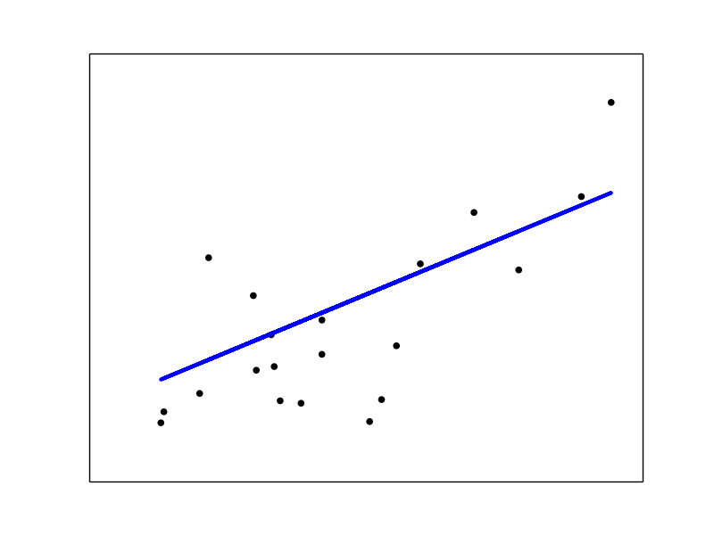

Linear Regression Example¶
This example uses the only the first feature of the diabetes dataset, in order to illustrate a two-dimensional plot of this regression technique. The straight line can be seen in the plot, showing how linear regression attempts to draw a straight line that will best minimize the residual sum of squares between the observed responses in the dataset, and the responses predicted by the linear approximation.
The coefficients, the residual sum of squares and the variance score are also calculated.
Script output:
('Coefficients: \n', array([ 938.23786125]))
Residual sum of squares: 2548.07
Variance score: 0.47
Python source code: plot_ols.py
print(__doc__)
# Code source: Jaques Grobler
# License: BSD 3 clause
import pylab as pl
import numpy as np
from sklearn import datasets, linear_model
# Load the diabetes dataset
diabetes = datasets.load_diabetes()
# Use only one feature
diabetes_X = diabetes.data[:, np.newaxis]
diabetes_X_temp = diabetes_X[:, :, 2]
# Split the data into training/testing sets
diabetes_X_train = diabetes_X_temp[:-20]
diabetes_X_test = diabetes_X_temp[-20:]
# Split the targets into training/testing sets
diabetes_y_train = diabetes.target[:-20]
diabetes_y_test = diabetes.target[-20:]
# Create linear regression object
regr = linear_model.LinearRegression()
# Train the model using the training sets
regr.fit(diabetes_X_train, diabetes_y_train)
# The coefficients
print('Coefficients: \n', regr.coef_)
# The mean square error
print("Residual sum of squares: %.2f"
% np.mean((regr.predict(diabetes_X_test) - diabetes_y_test) ** 2))
# Explained variance score: 1 is perfect prediction
print('Variance score: %.2f' % regr.score(diabetes_X_test, diabetes_y_test))
# Plot outputs
pl.scatter(diabetes_X_test, diabetes_y_test, color='black')
pl.plot(diabetes_X_test, regr.predict(diabetes_X_test), color='blue',
linewidth=3)
pl.xticks(())
pl.yticks(())
pl.show()
Total running time of the example: 0.14 seconds ( 0 minutes 0.14 seconds)